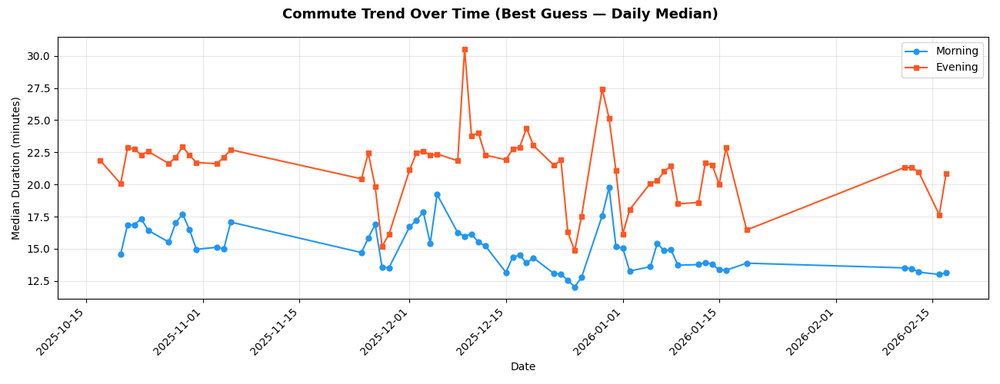
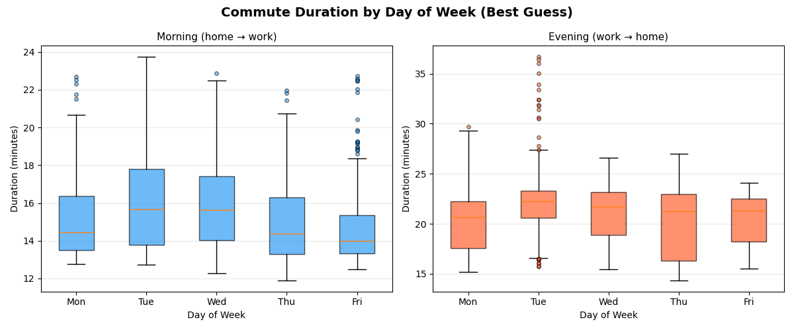
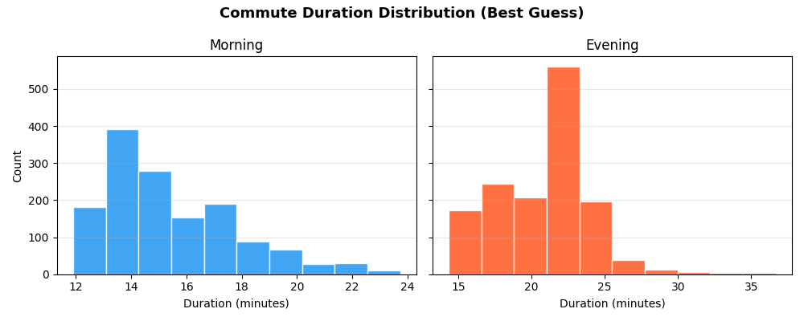
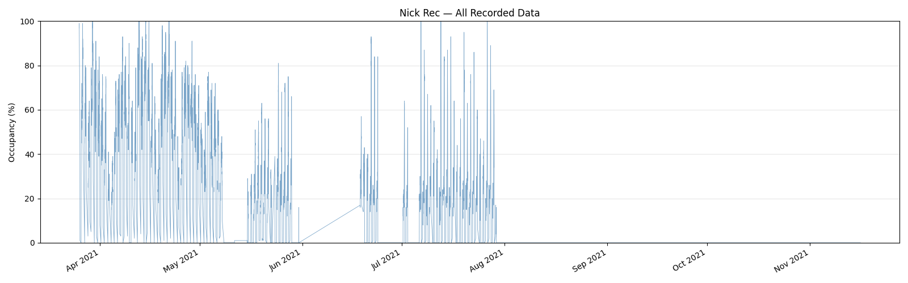
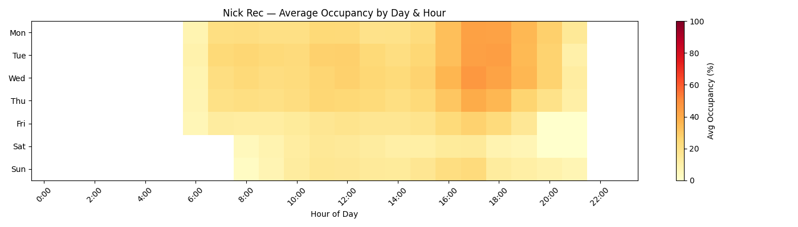

Introduction
Background
Motivations
Requirements
Scope of work
What work is required of this project?
Capabilities
delete this section for non-technical projects or otherwise small projects
Resources
Time, budget, and tools needed
Design
Sketches, Diagrams, or Mockups
early sketches of what is
can delete this section for smaller articles. If you do then delete all subheadings in this section
Design Approach
(methods, models, etc.)
Implementation and Building
Process
Wins
possibly change the name of this section depending on the project context
Challenges
Conclusion
Status and Results
Reflection
Looking forward




